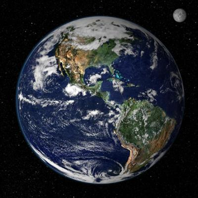
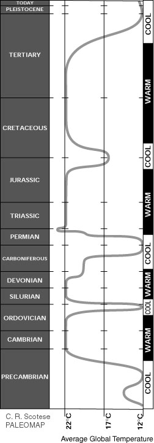
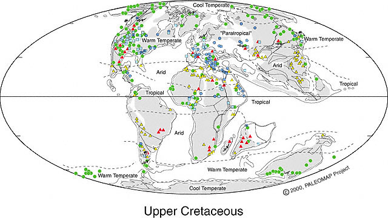
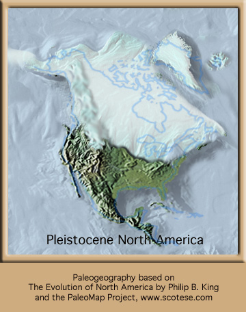

UK Independent Commentary: Gaia Guru
James Lovelock says global warming will kill us all very soon. We say it's a
great pitch to sell his new book, The Revenge of Gaia. We repost his
article unedited.
But we follow it up with his worst case scenario
- all the ice caps have melted and it's HOT - and see what
life on Earth really looked like the last time that happened - and the time
before that, and the time before that, and the time before that.
Here's the commentary from The Planetary Doctor,
who says he was appointed by Gaia herself:
 James
Lovelock: The Earth is about to catch a morbid fever that may last as long as
100,000 years
Each nation must find the best use of its resources to sustain civilisation
for as long as they can
Published: 16 January 2006
http://comment.independent.co.uk/commentators/article338830.ece
Imagine a young
policewoman delighted in the fulfilment of her vocation; then imagine her having
to tell a family whose child had strayed that he had been found dead, murdered
in a nearby wood. Or think of a young physician newly appointed who has to tell
you that the biopsy revealed invasion by an aggressive metastasising tumour.
Doctors and the police know that many accept the simple awful truth with dignity
but others try in vain to deny it.
Whatever the response, the bringers of such
bad news rarely become hardened to their task and some dread it. We have
relieved judges of the awesome responsibility of passing the death sentence,
but at least they had some comfort from its frequent moral justification.
Physicians and the police have no escape from their duty.
This article is the most difficult I have
written and for the same reasons. My Gaia theory sees the Earth behaving as
if it were alive, and clearly anything alive can enjoy good health, or
suffer disease. Gaia has made me a planetary physician and I take my
profession seriously, and now I, too, have to bring bad news.
The climate centres around the world, which
are the equivalent of the pathology lab of a hospital, have reported the
Earth's physical condition, and the climate specialists see it as seriously
ill, and soon to pass into a morbid fever that may last as long as 100,000
years. I have to tell you, as members of the Earth's family and an intimate
part of it, that you and especially civilisation are in grave danger.
Our planet has kept itself healthy and fit
for life, just like an animal does, for most of the more than three billion
years of its existence. It was ill luck that we started polluting at a time
when the sun is too hot for comfort. We have given Gaia a fever and soon her
condition will worsen to a state like a coma. She has been there before and
recovered, but it took more than 100,000 years. We are responsible and will
suffer the consequences: as the century progresses, the temperature will
rise 8 degrees centigrade in temperate regions and 5 degrees in the tropics.
Much of the tropical land mass will become
scrub and desert, and will no longer serve for regulation; this adds to the
40 per cent of the Earth's surface we have depleted to feed ourselves.
Curiously, aerosol pollution of the northern
hemisphere reduces global warming by reflecting sunlight back to space. This
"global dimming" is transient and could disappear in a few days like the
smoke that it is, leaving us fully exposed to the heat of the global
greenhouse. We are in a fool's climate, accidentally kept cool by smoke, and
before this century is over billions of us will die and the few breeding
pairs of people that survive will be in the Arctic where the climate remains
tolerable.
By failing to see that the Earth regulates
its climate and composition, we have blundered into trying to do it
ourselves, acting as if we were in charge. By doing this, we condemn
ourselves to the worst form of slavery. If we chose to be the stewards of
the Earth, then we are responsible for keeping the atmosphere, the ocean and
the land surface right for life. A task we would soon find impossible - and
something before we treated Gaia so badly, she had freely done for us.
To understand how impossible it is, think
about how you would regulate your own temperature or the composition of your
blood. Those with failing kidneys know the never-ending daily difficulty of
adjusting water, salt and protein intake. The technological fix of dialysis
helps, but is no replacement for living healthy kidneys.
My new book The Revenge of Gaia expands
these thoughts, but you still may ask why science took so long to recognise
the true nature of the Earth. I think it is because Darwin's vision was so
good and clear that it has taken until now to digest it. In his time, little
was known about the chemistry of the atmosphere and oceans, and there would
have been little reason for him to wonder if organisms changed their
environment as well as adapting to it.
Had it been known then that life and the
environment are closely coupled, Darwin would have seen that evolution
involved not just the organisms, but the whole planetary surface. We might
then have looked upon the Earth as if it were alive, and known that we
cannot pollute the air or use the Earth's skin - its forest and ocean
ecosystems - as a mere source of products to feed ourselves and furnish our
homes. We would have felt instinctively that those ecosystems must be left
untouched because they were part of the living Earth.
So what should we do? First, we have to keep
in mind the awesome pace of change and realise how little time is left to
act; and then each community and nation must find the best use of the
resources they have to sustain civilisation for as long as they can.
Civilisation is energy-intensive and we cannot turn it off without crashing,
so we need the security of a powered descent. On these British Isles, we are
used to thinking of all humanity and not just ourselves; environmental
change is global, but we have to deal with the consequences here in the UK.
Unfortunately our nation is now so urbanised
as to be like a large city and we have only a small acreage of agriculture
and forestry. We are dependent on the trading world for sustenance; climate
change will deny us regular supplies of food and fuel from overseas.
We could grow enough to feed ourselves on
the diet of the Second World War, but the notion that there is land to spare
to grow biofuels, or be the site of wind farms, is ludicrous. We will do our
best to survive, but sadly I cannot see the United States or the emerging
economies of China and India cutting back in time, and they are the main
source of emissions. The worst will happen and survivors will have to adapt
to a hell of a climate.
Perhaps the saddest thing is that Gaia will
lose as much or more than we do. Not only will wildlife and whole ecosystems
go extinct, but in human civilisation the planet has a precious resource. We
are not merely a disease; we are, through our intelligence and
communication, the nervous system of the planet. Through us, Gaia has seen
herself from space, and begins to know her place in the universe.
We should be the heart and mind of the
Earth, not its malady. So let us be brave and cease thinking of human needs
and rights alone, and see that we have harmed the living Earth and need to
make our peace with Gaia. We must do it while we are still strong enough to
negotiate, and not a broken rabble led by brutal war lords. Most of all, we
should remember that we are a part of it, and it is indeed our home.
The writer is an
independent environmental scientist and Fellow of the Royal Society. 'The
Revenge of Gaia' is published by Penguin on 2 February
Okay, we're scared silly. But not scared stupid.
The Planetary Physician - Doctor Death - has diagnosed Gaia's condition: incipient morbid
fever, death to humans.
But what does Gaia's medical chart tell us about her health history?
Let's look at Doctor Death's worst case scenario - average
temperature rise of 8 Celsius, taking as the present average about 15.8
Celsius [60.4 F.] (UNEP
estimate) and his hell climate at about 24 Celsius [75.2 F.].
Let's turn to the
PALEOMAP Project
of geoscience Professor
Christopher R. Scotese, University of Texas at Arlington. It's the story of
where Gaia's land and water have been for the past 1.1 billion years - where
continental drift has pushed the dirt around like a planetary bulldozer, which
has a lot to do with living conditions, and is responsible for most sea level
changes in the past, up and down, up and down, as the land moved around.
Fortunately for us the PALEOMAP Project contains
The
Climate History of the Earth - that's Gaia's medical chart.
The CLIMATE
HISTORY also contains
CLIMATE MAPS showing temperatures and living conditions at different times
during Gaia's last 1.1 billion years.
So here's what Gaia's actual medical record tells us,
courtesy the PALEOMAP Project:
|
ICE HOUSE or HOT HOUSE?
During the last 2 billion years the Earth's climate has alternated
between a frigid "Ice House", like today's world, and a steaming "Hot
House", like the world of the dinosaurs.
This chart shows how global climate has changed through
time. |
|

Hey, this is weird. Gaia has had
a BAAAD fever for most of her life!
In fact, it looks like what she's got
now is a CHILL!
And it looks like the fevers have
lasted a lot longer than the chills.
And what happened to life during all
those hot hell climates?
How about a climate map of a time so
hot there were no ice caps at all? It's called the Upper Cretaceous. That
morbid fever
lasted 35 million years, from about 65 to 100 million years ago.

During
the Late Cretaceous the global climate was warmer than today's climate.
No ice existed at the Poles. Dinosaurs migrated between the Warm
Temperate and Cool Temperate Zones as the seasons changed.
Original at:
http://www.scotese.com/lcretcli.htm.
12 C = 53.6 F
17 C = 62.6 F 22 C = 71.6 F
Note that even in this ultra-hot
Upper Cretaceous era, there were seasons, there were temperate areas and
there were cool areas. All those
little green dots on the map tell us where coal formed, and that means a
lot of biomass was living there. A lot. Doesn't look so bad. You just had
to watch out for those dinosaurs.
Unhealthy planet? Not fit for life?
Everyone will die? How much wheat you think they could grow in Siberia
without permafrost? Hmm...
Well, go look at all the other
global climate maps in the PALEOMAP Project and see for yourself how
things are in Gaia's medical chart, and you'll see that her normal
temperature range is much hotter than today. Lots of life. The appearance
of most of the life forms we see today. Aside from a few asteroid hits and
a bunch of volcanoes, safe enough for thousands of species to appear.
But what about a shorter time
perspective? What about in the last few thousand years, not
millions of years? It's mostly about the ice age, and it bridges the time
gap from millions to thousands of years ago.
 The
present ice age began 40 million years ago with the growth of an ice sheet
in Antarctica, but intensified during the
Pleistocene (starting around 3 million years ago) with the spread of
ice sheets in the Northern Hemisphere. Since then, the world has seen
cycles of glaciation with ice sheets advancing and retreating on 40,000
and 100,000 year time scales. The last glacial period ended about 10,000
years ago.
What about that last glacial period?
As a complete amateur with no
credentials in climate science, anyone who has tried to garden where I
live near Seattle, Washington, USA, knows that climate change is real and
it has real consequences. We see them two good shovelfuls under the
topsoil in a layer of nasty, gravelly hardpan. It was brought here by
glaciers. Big 'uns.
Where I'm sitting at my computer
writing this, 12,000 years ago there was about a mile of ice over my
house. Of course, my house wasn't there then, but a big glacier was. By
11,000 years ago the Seattle Glacier was gone. By 10,000 years ago the
whole continental ice sheet was gone. Some ferocious global warming took
all that ice away, and that was LOTS of ice.
It was probably because of all those Neanderthals driving
their 10000 BCE model gas guzzlers in Los Angeles.
One day I was walking on the shoreline
along the Strait of Juan de Fuca about 100 miles west of Seattle on the
Olympic Peninsula and I saw some prickly pear cactus. I thought it was
pretty dumb of the locals to plant a desert dweller here in the rain and
fog and 42 F. average year-round temperature. Turns out, a University of
Washington botanist told me, it was Mother Nature herself who planted them
there around 8,000 years ago. Seems there was a big temperature rebound
right after the glaciers left. It got hot enough for those specimens of
Opuntia to thrive. The ones I saw are what's called "relicts," species
that lived past their pull date when conditions changed.
Then about six or seven thousand years
ago, the trees came, the mixed Douglas fir / western hemlock subclimax
forest that survives today in a lot more places than Doctor Death would
have you think. I've got an even-dozen 80-foot tall Douglas firs in my
yard, in fact, and it's just an ordinary city lot. It makes it dark in the
house and
messes up the carpet when the needles get tracked in, but we like our
trees so
much that we removed our concrete walkway and built a nice cedar entry deck around
a big tree next to our front
door rather than cut it down or leave the walkway to hurt its roots. Makes it easy to hug every time we come in
the house. And the tree bends outward at the eaves without touching them, then straightens up
above our roofline. The city forester - and yes, my town has one - says it knows our house is there and it's making
allowances.
If Doctor Death is right, my trees will
probably croak by 2100. That will make me sad if I'm still around at age
160. But, you know, if Gaia's actual health chart is any indication,
Seattle will be in one of those temperate bands we see on the global
climate maps from way back when. And your great grandchildren then might
not die of your wretched excesses today. In fact, Doctor Death may be a
quack, practicing planetary medicine without a license. And how do we know
Gaia appointed him court physician anyway?
So, here are a few things I know by
direct observation. There's no ice sheet a mile thick over my house. My
shovel tells me there
was one not so long ago. It melted in one big hurry. There weren't many
people around to cause it 12,000 years ago, and none of the ones that were drove Volvo SUVs,
the savages.
Obviously, global warming didn't
wait for us to show up. Maybe Gaia can throw a warming tantrum all by herself, ya think?
And maybe prudent self-interest will
help relieve whatever we're doing to add to Gaia's own fits of glacial
meltdown.
But that's just my opinion. I could be
wrong.
Bottom line? It looks to me like James
Lovelock is out to make a buck (a quid, he's Brit), and more power to him.
Sell lots of books, get rich, and scare the pants off everybody you can,
Jimmy. Helps the economy.
But as far as planetary physician,
you're fired. And when you've packed up your desk, be sure to leave Gaia's
medical chart with the receptionist. If you ever had it to begin with.
RETURN TO THE CENTER
VIEW
RETURN TO CENTER FOR THE
DEFENSE OF FREE ENTERPRISE HOME PAGE
|
|
 Center
for the Defense of Free Enterprise
Center
for the Defense of Free Enterprise